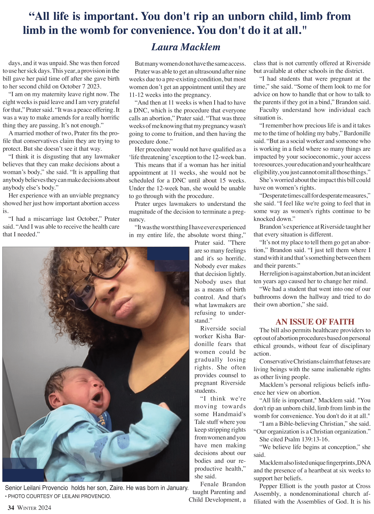
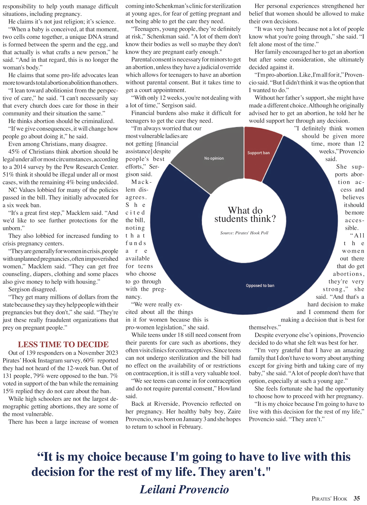
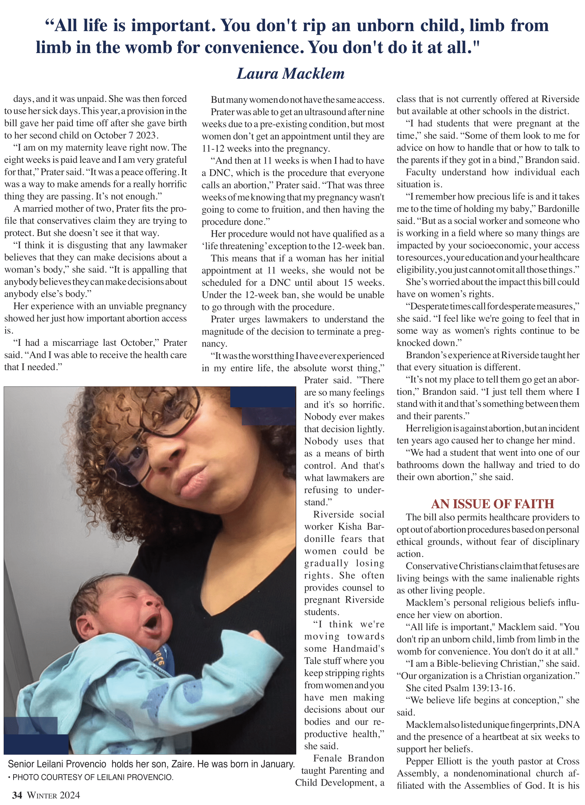
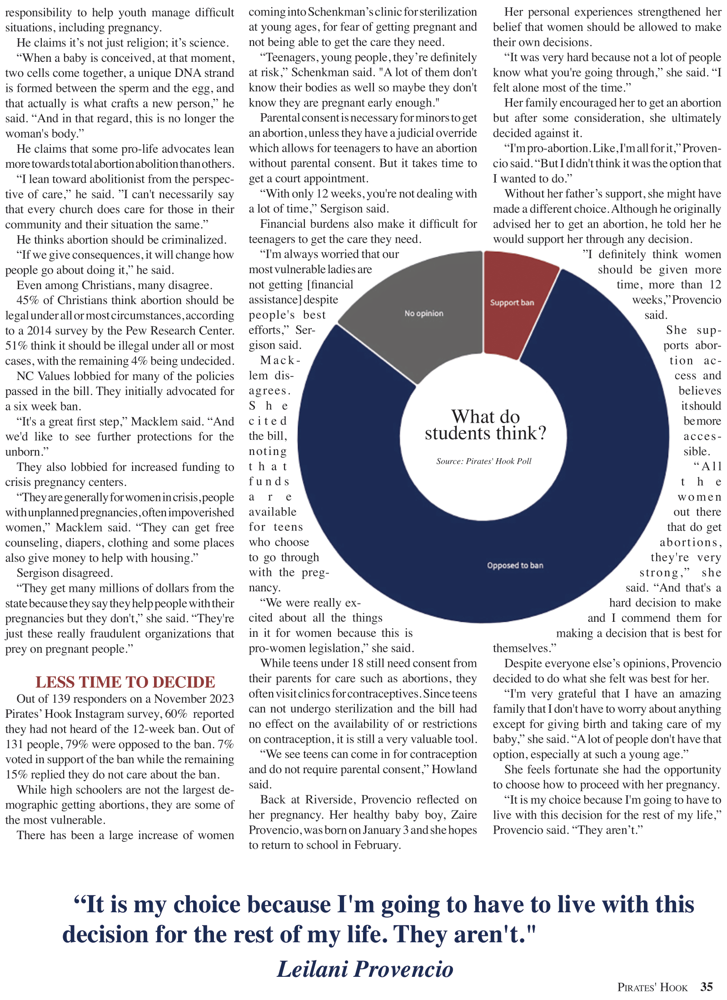
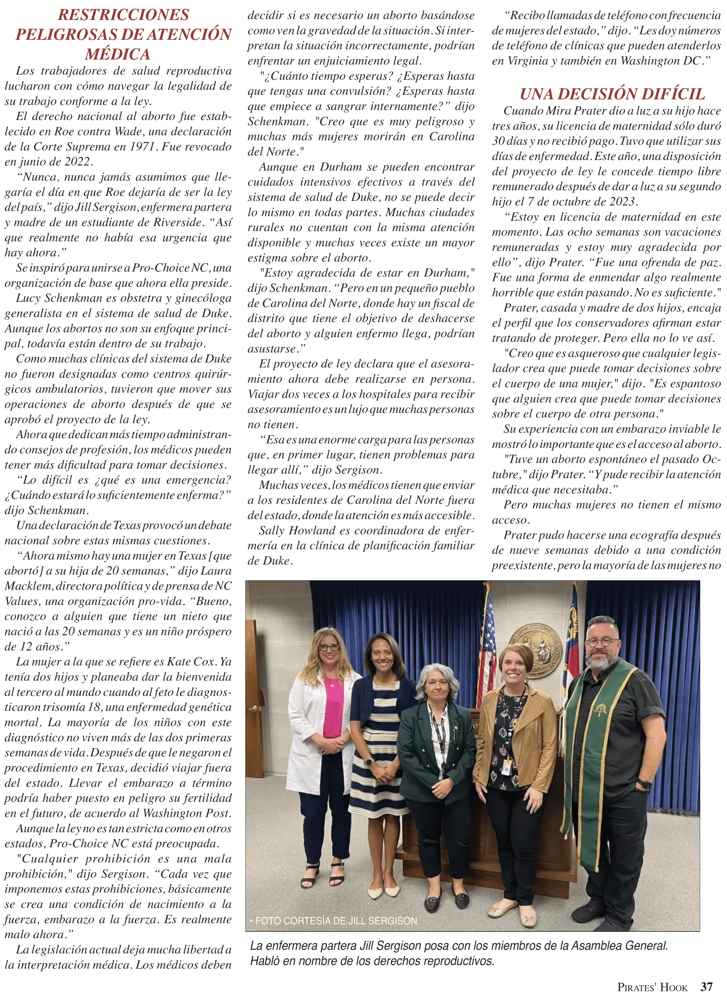
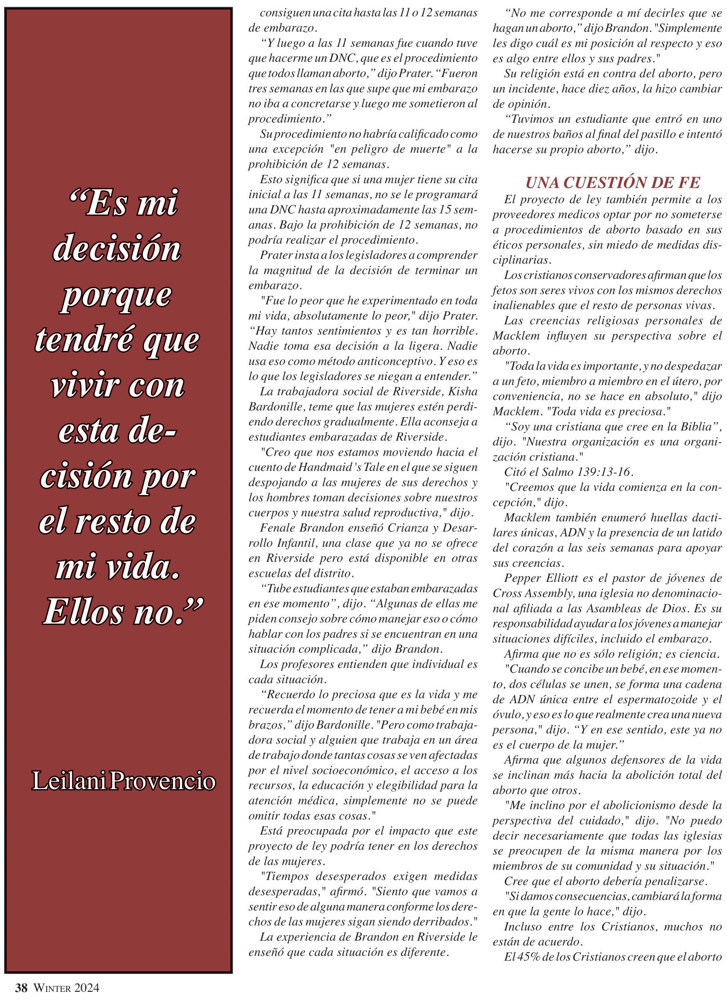
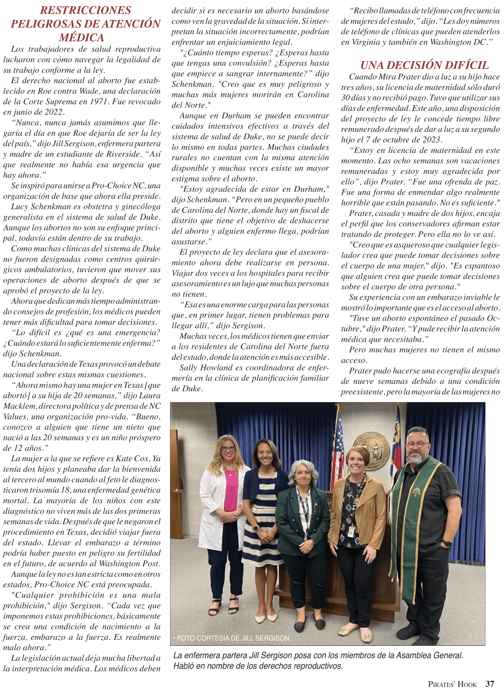
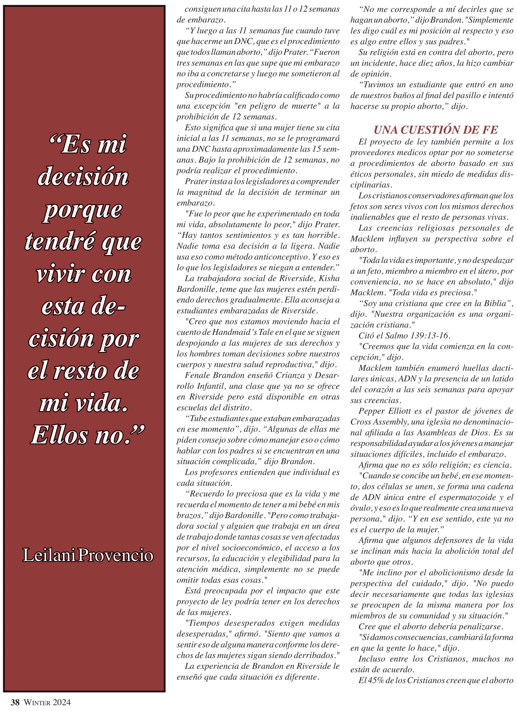

 



ABORTION TEXT ABORTION TEXT ABORTION TEXT ABORTION TEXT ABORTION TEXT ABORTION TEXT ABORTION TEXT ABORTION TEXT


I did not officially have a page on this issue, but as one of the editors, it was my role to edit the entire paper before we submitted it. With one day until submission, I completely envisioned this spread. I decided to move the sponsors onto this page and to make the shorter stories a column.

After I finished designing this page for my Shrek: The Musical article, I was told to add a column for my classmate’s prom story. In hindsight, I should have allowed more space for the column.


After spending the 2022 fall semester working on my semester-long investigative story, I designed this spread. I worked with an artist to create a page which conveyed the feeling of emptiness in the mall.
While I also designed a page for my own story in the November 2022 print issue, I learned the most by assisting my classmate in designing their page. I learned how to text-wrap around an irregularly shaped graphic. This taught me that it takes a lot of patience to design a page.

This is the first page I ever designed. Although I would do many things differently now, I am proud of the effort I put into it. Through this story, I learned how to use InDesign to design a print edition.